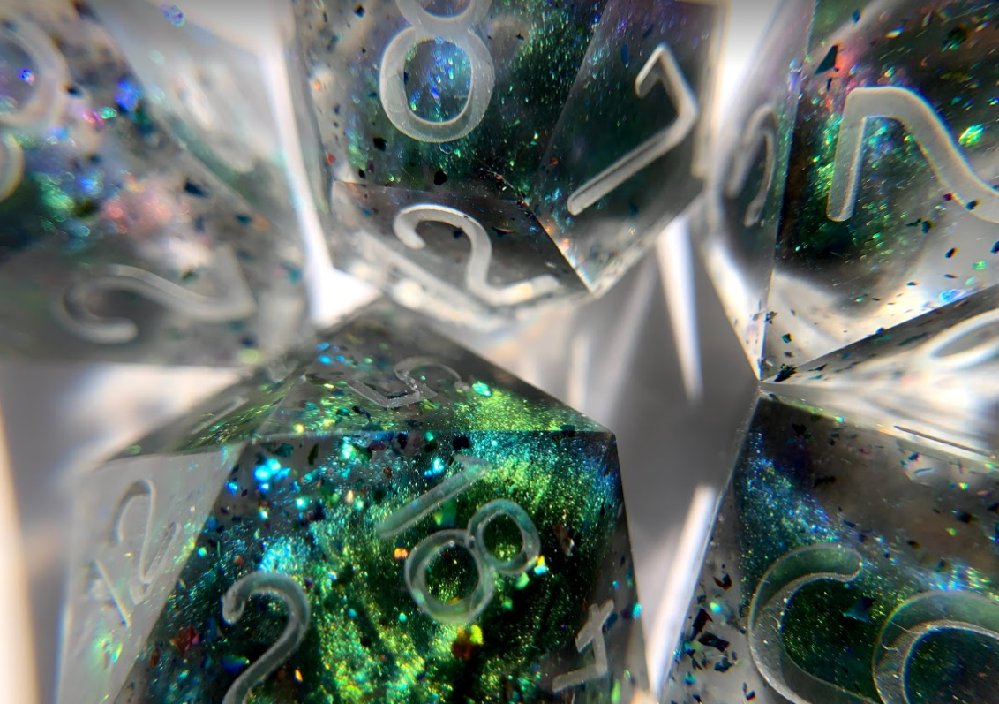

Check out this small bold bit of text!
I'm baby normcore mustache vaporware, echo park air plant DIY biodiesel drinking vinegar poutine knausgaard put a bird on it chia craft beer. Ennui viral selfies umami coloring book. Fixie polaroid kombucha, kitsch selfies food truck PBR&B. Occupy next level scenester four dollar toast, cloud bread 3 wolf moon viral.Kale chips 3 wolf moon bushwick, umami vinyl post-ironic tumeric 8-bit keffiyeh kitsch XOXO trust fund. Marfa artisan swag green juice fingerstache stumptown taiyaki post-ironic authentic mustache DIY. Twee pitchfork shaman, air plant ramps stumptown forage distillery brunch food truck. Cliche hell of glossier sartorial, VHS copper mug heirloom raclette yr poutine pour-over pok pok affogato blog tumblr. Pinterest iceland quinoa salvia neutra sustainable.
Check out this small bold bit of text!
Godard venmo next level, trust fund irony sartorial pop-up. Readymade plaid hashtag lyft, post-ironic kitsch jean shorts flexitarian drinking vinegar lo-fi flannel williamsburg meditation. Man braid vaporware tbh lumbersexual offal meggings. Copper mug ennui deep v woke mlkshk, hammock kombucha activated charcoal. Artisan seitan gentrify schlitz synth.Banh mi shoreditch 90's prism taiyaki, you probably haven't heard of them aesthetic sriracha glossier kickstarter. Microdosing pop-up green juice, sustainable chia blog DIY leggings austin gentrify twee pabst irony. Narwhal shaman chartreuse shoreditch, sustainable taxidermy lo-fi forage swag flexitarian palo santo. Vegan wayfarers listicle cardigan bicycle rights glossier humblebrag portland skateboard tumeric VHS. Raclette asymmetrical godard ramps, hashtag disrupt semiotics gastropub fingerstache woke gochujang. La croix ennui coloring book umami drinking vinegar.
Sustainable williamsburg intelligentsia yuccie, letterpress sriracha retro food truck copper mug quinoa enamel pin street art edison bulb iceland. Forage schlitz tbh, bushwick master cleanse pour-over synth. Air plant palo santo twee, roof party copper mug drinking vinegar tumblr +1. Four loko lyft authentic bushwick, 90's pinterest hashtag.
Dummy text? More like dummy thicc text, amirite?